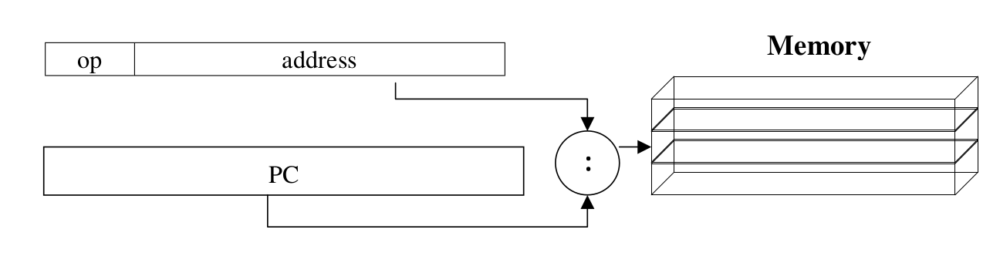
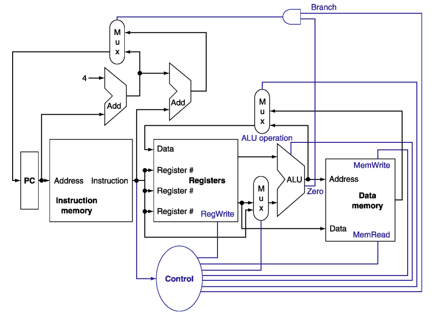
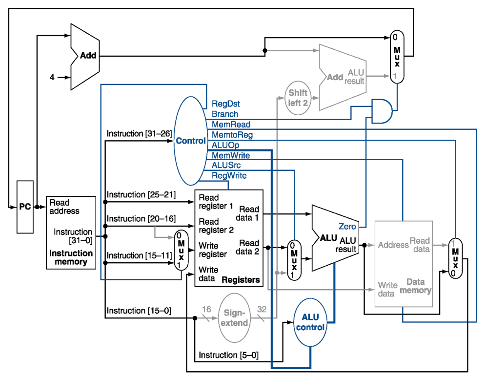
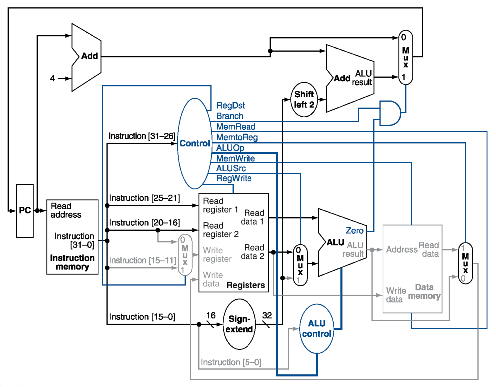

計算機組織
Computer Abstractions and Technology
Abstractions architecture

ISA: Instruction set architecture (The hardware/software interface)
Trade-off
Power Trends
Integrated Circuit Cost
Performance
Relative Performance
e.g. X is n time faster than Y
Response Time and Throughput
- Response time(Elapsed time): The time it takes to do a task（要完成一件工作，所需花費的時間）
- including all aspects (Processing, I/O, OS overhead, idle time)
- Determines system performance
- Throughput: Total work done per unit time（在一定時間內，所能完成的工作量）
- e.g., tasks/transactions/… per hour
CPU Clocking

- Clock period: duration of a clock cycle（一個 Cycle 花費的時間）
- e.g., 250ps = 0.25ns = 250×10 –12 s
- Clock frequency (rate): cycles per second（一秒幾個 Cycle）
- e.g., 4.0GHz = 4000MHz = 4.0×10 9 Hz
CPU time
CPU處理給定的工作所花費的時間 (Discounts I/O time, other jobs’ shares)
公式理解：處理工作時走了幾個 Cycle 乘上每走一個 Cycle 所要花費的時間
- Performance improved by
- Reducing number of clock cycles
- Increasing clock rate
- Hardware designer must often trade off clock rate against cycle count
Cycles per Instruction (CPI)
每執行一個指令(Instruction)，所要花費的 Cycle
- Instruction Count for a program
- Determined by program, ISA and compiler
- Average cycles per instruction
- Determined by CPU hardware
CPU Time 可以改寫為：
If different instruction classes take different numbers of cycles
Weighted average CPI
Performance Summary
- Performance depends on
- Algorithm: affects IC, possibly CPI
- Programming language: affects IC, CPI
- Compiler: affects IC, CPI
- Instruction set architecture: affects IC, CPI, Tc
Amdahl’s Law
Improving an aspect of a computer and expecting a proportional improvement in overall performance
MIPS
Millions of Instructions Per Second
ps: MIPS無法拿來當作電腦效能的依據（因為沒有考慮到 Instruction Count）
Instructions: Language of the Computer
以下皆以 MIPS Instruction Set 為例子
Design Principle
- Simplicity favours regularity（MIPS Instruction 的 Format 都相近）
- Smaller is faster（越少 Register 就越少電路）
- Make the common case fast（e.g. addi vs add，減少 Load instruction)
- Good design demands good compromises（根據需求有不同的format，但都是32bit且各個format盡量相似）
Register Usage
| Register Number | Conventional Name | Usage |
|---|---|---|
| $0 | $zero | Hard-wired to 0 |
| $1 | $at | Reserved for pseudo-instructions |
| $2 - $3 | $v0, $v1 | Return values from functions |
| $4 - $7 | $a0 - $a3 | Arguments to functions - not preserved by subprograms |
| $8 - $15 | $t0 - $t7 | Temporary data, not preserved by subprograms |
| $16 - $23 | $s0 - $s7 | Saved registers, preserved by subprograms |
| $24 - $25 | $t8 - $t9 | More temporary registers, not preserved by subprograms |
| $26 - $27 | $k0 - $k1 | Reserved for kernel. Do not use. |
| $28 | $gp | Global Area Pointer (base of global data segment) |
| $29 | $sp | Stack Pointer |
| $30 | $fp | Frame Pointer |
| $31 | $ra | Return Address |
| $f0 - $f3 | - | Floating point return values |
| $f4 - $f10 | - | Temporary registers, not preserved by subprograms |
| $f12 - $f14 | - | First two arguments to subprograms, not preserved by subprograms |
| $f16 - $f18 | - | More temporary registers, not preserved by subprograms |
| $f20 - $f31 | - | Saved registers, preserved by subprograms |
Format
R-format (Register)
| op | rs | rt | rd | shamt | funct |
|---|---|---|---|---|---|
| 6 bits | 5 bits | 5 bits | 5 bits | 5 bits | 6 bits |
- op: operation code (opcode)
- rs: first source register number
- rt: second source register number
- rd: destination register number
- shamt: shift amount (00000 for now)
- funct: function code (extends opcode)
example) add $t0, $s1, $s2
| op | rs | rt | rd | shamt | funct |
|---|---|---|---|---|---|
| special | $s1 | $s2 | $t0 | 0 | add |
| 0 | 17 | 18 | 8 | 0 | 32 |
| 000000 | 10001 | 10010 | 01000 | 00000 | 100000 |
I-format (Immediate)
| op | rs | rt | constant or address |
|---|---|---|---|
| 6 bits | 5 bits | 5 bits | 16 bits |
- Immediate arithmetic and load/store instructions
- rt: Target Register
- Constant:
- Address: offset added to base address in rs
example) addi $t0, $s1, -50
| op | rs | rt | constant or address |
|---|---|---|---|
| 8 | $s1 | $t0 | -50 |
| 8 | 17 | 8 | -50 |
| 001000 | 10001 | 01000 | 11111111 11001110 |
J-format (Jump)
| op | address |
|---|---|
| 6 bits | 26 bits |
Addressing
Immediate Addressing
運算元是常數,且包裝在指令內部

Register Addressing
運算元是暫存器

Base Addressing
運算元存放在記憶體中,而位址本身是暫存器和指令中常數的和
PC-relative Addressing
位址是 PC 和指令中常數的加總
Pseduodirect Addressing
跳躍位址是指令的 26 位元再加上 PC 較高的位元

Branch Addressing
PC: Program Counter
See: ISA 2.4 MIPS: Addresses in branches and jumps
Conditional Branch
根據比較結果改變程式流向，用 I-format (e.g. beq rs, rt, imm)
由於所有指令在記憶體中都是 4bytes 對齊的（一定都是 4 的倍數），最後 2 個 bit 沒有必要存，所以都是 0

Unconditional Branch
直接 jump 到指定的 Address 上

Procedure Call
Leaf Procedure
See:
Non-Leaf Procedure
Using stack to restore back registers
See:
- ISA 2.9 MIPS: Saving and restoring registers to the stack
- ISA 2.10 Procedure Calls: Saving Registers (example 1)
- ISA 2.11 Procedure Calls: Saving registers (example 2)
- ISA 2.12 Procedure call summary
Synchronization
兩個 procedure 對同一個 share variable 讀取寫入時，需要一個機制來協調兩者
See:
Arithmetic for Computers
Multiplication
Booth’s Algorithm
Booth’s algorithm - Binary multiplication example | Computer Organization
Division
Floating Point
待補
IEEE 754
Computer Science Concepts: IEEE 754 - Learn Freely
The Processor
CPU Overview

因為不能把很多線接在一起，所以需要 MUX，還需要有 Control Unit 來控制 MUX：

Instruction Fetch

- PC: 32-bits register
- 每次執行完指令後將 PC + 4 (1 個 instruction 4 bytes)
Instructions Datapath
R-Format
| 6bits | 5bits | 5bits | 5bits | 5bits | 6bits |
|---|---|---|---|---|---|
| op | rs | rt | rd | shamt | funct |

- 讀 2 個 input: Read Register 1, 2
- 進 ALU 做運算
- 把算出來的結果存到 Write Register
I-Format
| 6bits | 5bits | 5bits | 16bits |
|---|---|---|---|
| op | rs | rt | immediate |
Load/Store

- Sign-extend (以 ALU 實做) 用作將 Address 做 16-bits 的 offset (I-type 的後 16-bits 要轉成 32-bits)
- Load: 讀 Memory 的資料然後更新 Register
- Store: 將 Register 的資料寫到 Memory
Branch
- 讀 2 個 Register
- 比較兩個 Register (用 ALU 的 Substract 還有 Check Zero output)
- 算 Target Address
- Sign-extended
- 左 shift 2-bits (因為一個 word 4-bits)
- 加上 PC + 4
J-Format
| 6bits | 26bits |
|---|---|
| op | target address |
- 舊 PC 的前 4-bits
- 26-bits jump address
- 00
組合在一起
Control Unit
ALU Control
| ALU control | Function |
|---|---|
| 0000 | AND |
| 0001 | OR |
| 0010 | add |
| 0110 | subtract |
| 0111 | set-on-less-than |
| 1100 | NOR |
分析一下 Instruction 需要 ALU 做什麼事：
- 分 4 類
- Load/Store: add
- Branch: substract
- R-type: depend on funct-field
- 讀到 10 要再讀 funct field (由 second level 產生出 ALU signal)
| opcode | ALUOp | Operation | funct | ALU function | ALU control |
|---|---|---|---|---|---|
| lw | 00 | load word | XXXXXX | add | 0010 |
| sw | 00 | store word | XXXXXX | add | 0010 |
| beq | 01 | branch equal | XXXXXX | subtract | 0110 |
| R-type | 10 | add | 100000 | add | 0010 |
| subtract | 100010 | subtract | 0110 | ||
| AND | 100100 | AND | 0000 | ||
| OR | 100101 | OR | 0001 | ||
| set-on-less-than | 101010 | set-on-less-than | 0111 |
- 25:21: always read
- 20:16: 除了 load 都為 read
- R-type 的 rd, Load 的 rt: write
- address: sign-extended, add
| Instruction | 31:26 | 25:21 | 20:16 | 15:11 | 10:6 | 5:0 |
|---|---|---|---|---|---|---|
| R-type | 0 | rs | rt | rd | shamt | funct |
| Load/Store | 35/43 | rs | rt | address | ||
| Branch | 4 | rs | rt | address |
R-type

Load

Branch-on-Equal

Jump

Control Unit Settings
| Instruction | RegDst | ALUSrc | MemToReg | RegWrite | MemRead | MemWrite | Branch | ALUOp1 | ALUOp0 |
|---|---|---|---|---|---|---|---|---|---|
| R-format | 1 | 0 | 0 | 1 | 0 | 0 | 0 | 1 | 0 |
| lw | 0 | 1 | 1 | 1 | 1 | 0 | 0 | 0 | 0 |
| sw | x | 1 | x | 0 | 0 | 1 | 0 | 0 | 0 |
| beq | x | 0 | x | 0 | 0 | 0 | 1 | 0 | 1 |
First-Level Control
把 Input 的 op 和 Output 的 Control Signal 找出關係：
| Input or output | Signal name | R-format | lw | sw | beq |
|---|---|---|---|---|---|
| Inputs | Op5 | 0 | 1 | 1 | 0 |
| Op4 | 0 | 0 | 0 | 0 | |
| Op3 | 0 | 0 | 1 | 0 | |
| Op2 | 0 | 0 | 0 | 1 | |
| Op1 | 0 | 1 | 1 | 0 | |
| Op0 | 0 | 1 | 1 | 0 | |
| Outputs | RegDst | 1 | 0 | X | X |
| ALUSrc | 0 | 1 | 1 | 0 | |
| MemtoReg | 0 | 1 | X | X | |
| RegWrite | 1 | 1 | 0 | 0 | |
| MemRead | 0 | 1 | 0 | 0 | |
| MemWrite | 0 | 0 | 1 | 0 | |
| Branch | 0 | 0 | 0 | 1 | |
| ALUOp1 | 1 | 0 | 0 | 0 | |
| ALUOp2 | 0 | 0 | 0 | 1 |

Second-Level Control
將 ALU Control 的表格：
| opcode | ALUOp | Operation | funct | ALU function | ALU control |
|---|---|---|---|---|---|
| lw | 00 | load word | XXXXXX | add | 0010 |
| sw | 00 | store word | XXXXXX | add | 0010 |
| beq | 01 | branch equal | XXXXXX | subtract | 0110 |
| R-type | 10 | add | 100000 | add | 0010 |
| subtract | 100010 | subtract | 0110 | ||
| AND | 100100 | AND | 0000 | ||
| OR | 100101 | OR | 0001 | ||
| set-on-less-than | 101010 | set-on-less-than | 0111 |
整理一下：
| ALUOp1 | ALUOp0 | F5 | F4 | F3 | F2 | F1 | F0 | ALU control | Operation |
|---|---|---|---|---|---|---|---|---|---|
| 0 | 0 | X | X | X | X | X | X | 0010 | lw/sw |
| X | 1 | X | X | X | X | X | X | 0110 | beq |
| 1 | X | X | X | 0 | 0 | 0 | 0 | 0010 | add |
| 1 | X | X | X | 0 | 0 | 1 | 0 | 0110 | sub |
| 1 | X | X | X | 0 | 1 | 0 | 0 | 0000 | AND |
| 1 | X | X | X | 0 | 1 | 0 | 1 | 0001 | OR |
| 1 | X | X | X | 1 | 0 | 1 | 0 | 0111 | slt |
分析 ALU Control 各 bit 的算式，可以發現有些地方結合後其實就是 Don’t care：
| ALUOp1 | ALUOp0 | F5 | F4 | F3 | F2 | F1 | F0 | ALU control |
|---|---|---|---|---|---|---|---|---|
| X | 1 | X | X | X | X | X | X | 0110 |
| 1 | X | X | X | 0 | 0 | 1 | 0 | 0110 |
| 1 | X | X | X | 1 | 0 | 1 | 0 | 0111 |
| ALUOp1 | ALUOp0 | F5 | F4 | F3 | F2 | F1 | F0 | ALU control |
|---|---|---|---|---|---|---|---|---|
| 0 | 0 | X | X | X | X | X | X | 0010 |
| X | 1 | X | X | X | X | X | X | 0110 |
| 1 | X | X | X | 0 | 0 | 0 | 0 | 0010 |
| 1 | X | X | X | 0 | 0 | 1 | 0 | 0110 |
| 1 | X | X | X | 1 | 0 | 1 | 0 | 0111 |
| ALUOp1 | ALUOp0 | F5 | F4 | F3 | F2 | F1 | F0 | ALU control |
|---|---|---|---|---|---|---|---|---|
| 1 | X | X | X | 0 | 1 | 0 | 1 | 0001 |
| 1 | X | X | X | 1 | 0 | 1 | 0 | 0111 |
Performance
- Critical path: load instruction
- Instruction memory register file ALU data memory register file
- Violates design principle: Making the common case fast
p37
最理想:
一個cycle執行完一個指令
5個 stage 同時執行不同指令
p42
因為 hazard 碰到很多問題
- Structure hazards: 硬體架構，大家都要用但只有一份resouse，要用就要排隊
- Data hazard: 前一個指令算完時還讀不到 (前一個指令第5個stage才存，但我第2個stage就要)
- Control hazard: 下一個clock cycle不知道要執行甚麼指令
p44
bubble: no opertation
panelty: 願景:一個cycle完成一個指令 第一個指令做完 > no operation > no operation > 第二個指令執行完畢 : 50%的使用率
p45
forwarding: 只要拿到值就開始算，不用等存到 reg 再讀出來
p46
Load & R-type
lw 在第四個 stage 結束後才讀出來
ex 後是 mem address 不是 data，不能直接拉 ex 後那條
p47
左 lw 與 add 相鄰，中間要 no operation > 多了兩個 clock cycle
reorder 指令，讓 lw 與 add 間隔兩個 cycle
p48
beq 下一個 Instruction fetch 不確定要執行甚麼指令
p49
branch 結果知道後才知道要跳還是不要跳
p50
猜!
p51
上: 猜不要跳，猜對了
下: 猜不要跳，猜錯了，lw 在 pipeline instruction fetch，但不應該被執行，加一些硬體的設定直接 flush 掉，讓 lw 後面都變成 no operation，跳到or繼續執行
p52
不是亂猜
static:
每次都猜跳
dynamic:
你上次猜對還猜錯，猜對了繼續猜同樣的，猜錯了跟個性有關，猜錯一次就換，猜錯多次才換
p53
increse instruction throughput
一個時間點每個stage執行不同指令
每個instruction有相同的latency
p54
由右往左的常有 hazard 問題

p55
一條線有3個值 > 加 pipeline register
保持指令資訊
p56
single-clock-cycle: 分析單一 operation
muli-cycle pipline diagram: 分析各 operation 關係
p61
第 i + 3 個 write register，不是第 i 個的 write register
p62
把 write register pack 起來，一起走
p69
為甚麼不把 RegDst 搬到前面，可以少掉 5 bit?
MUX 需要 input selection (RegDst) ，由control unit 產生，如果放在第二個 stage RegDst 還沒產生
p70
回去 trace 一遍
p71
control signal 分類: WB, M, EX
用過的就丟了
p72
RegWrt 要滿足打包的原則，所以會被 pack 到 pipeline regiter
p74
什麼時候可以解決 hazard?